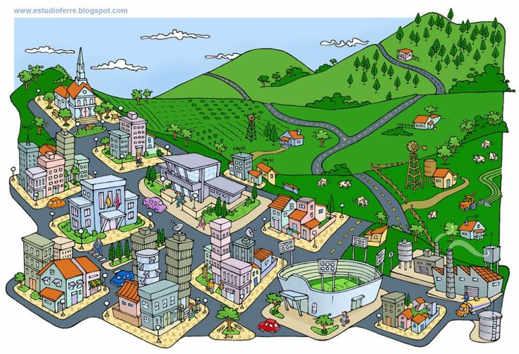

Do campo à cidade, Colhendo Oportunidades
Objetivos.
Fortalecer a agricultura familiar.
Incentivar a produção e comercialização de produtos agrícolas.
Facilitar o acesso à tecnologias e inovações no campo.
Ações e Inicialmente
parcerias com credito e oficialmente a produtos rurais.
bf